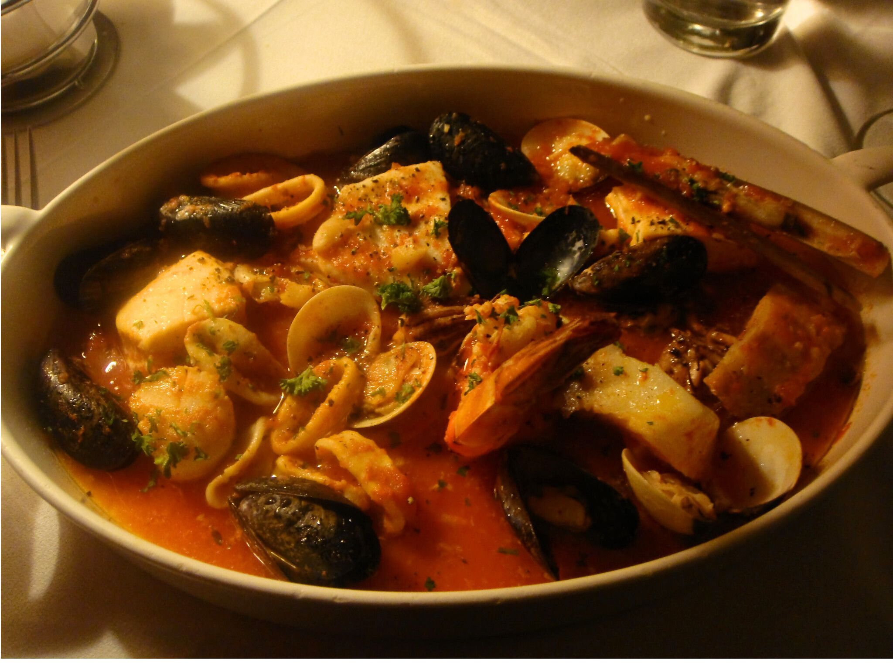

Cioppino

Description
Cioppino is a famous seafood stew created by Italian-American immigrants in San Francisco. While related to many Italian and other Mediterranean fish stews this homey seafood stew recipe with halibut, shrimp, and mussels is an example of adaptation and ingenuity.
Ingredients
- ¾ cup butter
- 2 onions, chopped
- 1 bunch fresh parsley, chopped
- 2 cloves garlic, minced
- 2 (14.5 ounce) cans stewed tomatoes
- 2 (14.5 ounce) cans chicken broth
- 1 ½ cups white wine
- 1 cup water
- 2 bay leaves
- 1 tablespoon dried basil
- ½ teaspoon dried thyme
- ½ teaspoon dried oregano
- 1 ½ pounds cod fillets, cubed
- 1 ½ pounds large shrimp - peeled and deveined
- 1 ½ pounds bay scallops
- 18 small clams
- 18 mussels, cleaned and debearded
- 1 ½ cups crabmeat
Steps
- Melt butter in a large stockpot over medium-low heat.
Add onions, parsley, and garlic. Cook and stir until onions are softened,
3 to 4 minutes.
- Add tomatoes to the pot (break them into chunks as you add them).
Stir in chicken broth, wine, water, bay leaves, basil, thyme,
and oregano. Cover and simmer for 30 minutes.
- Stir in cod, shrimp, scallops, clams, mussels, and crabmeat.
Bring to boil; lower heat, cover, and simmer until clams open up,
5 to 7 minutes. Ladle soup into bowls and serve.